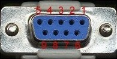

Entwicklung
Nun begannen die ersten Versuche mit dem Casio:
- Serielle Schnittstelle aktivieren, mit dem PC kommunizieren, .....
- Notebook - wie von extern ein- und ausschalten?
- Casiobatterie extern speisen?

So entstand ein Programm:
Lesen Sie hier den Programmkurzbeschrieb:
INFOS zum CARPLAYER
Dieses Gerät ist mit einem Notebook verbunden und sendet via serielle Schnittstelle Befehle zur Steuerung der Musik.
Software Casio: OW-Basic 3.24
PC: Power-Basic 2.10f
Player: Winamp 2.10
programmiert im Januar 2006 von Fred Hari
WEITERE DETAILS
1. Hardware
- PC - IBM Pentium II, ca. 300 MHz reicht vollkommen; Bildschirm kann defekt sein
- Casio PV S-660 (6M)
- Serielles Kabel
- Kleines Relais an PS2 angeschlossen: ON=PC läuft / OFF=PC aus oder Standby
- Einschaltrelais (entspricht den 6 Kontakten des entfernten Aus/Einschalters
- Funktion: Ein MC741 spürt ab, ob das serielle Kabel (Pin 5 = Masse / Pin 7 = -5V) minus 5 V liefert. Wenn ja, dann zieht das Einschaltrelais und das kleine Relais unterbricht den Kontakt zu Pin7 und schaltet zusätzlich die Masse ans externe LED (=Kontrolle, ob PC läuft).
- Schalter = Not ein/aus
- Stromanschluss für Batterie Casio
2. Software
A.EXE sucht alle Ordner mit MP3-Files, legt sie als ALDOS und IP.DOS ab, sendet alle Alben (Ordner) und Interpreten (Ordner) mit einer 2-stelligen Zahl an Casio.
Die zwei- oder dreistellige Zahl sagt, wie viele Alben, respektive Titel der Ordner enthält.
B.EXE macht aus den DOS-Namen von A.EXE Windowsnamen (ALDOS wird zu ALBUM / IP.DOS zu I_PRET ) und zählt alle MP's (DIR.ALL). Die Zahl wird dann von CARPLAY.EXE am Anfang übermittelt.
MPXPLAY.EXE braucht damit es läuft, DOSGW.EXE ermittelt nur die Länge des Songs und legt diese als t.t ab.
CLAMP.EXE (=CommandLineWinAMP) ist ein DOS-Programm zur Steuerung von WINAMP.EXE (unter C:\Programme\Winamp) , das Pausen ermöglicht.
WINAMP.EXE ist der MP3-Player, der auf dem PC läuft.
NIRCMD.EXE ist ein universelles Comandline-Programm. Mit seiner Hilfe lässt sich der Bildschirm ausschalten, die Soundeinstellungen setzen und der PC in den Standby-Modus fahren.
3. CARPLAY.EXE Das Hauptprogramm auf dem PC
- lädt bei Start Anzahl Starts, Songs, und Anzahl MP's aus CARPLAY.INI und sendet diese Zahlen nach Casio.
- Schaltet Ton von Master und Wave ein und schaltet den Bildschirm aus.
- Wartet auf einen Befehl von Casio.
Befehle:
- Dezimalzahl, z. Bsp. 4.12 (=4 Ordner, 12 Titel nach TREE-Verzeichnis) spielen
- Nur Zahl (z. Bsp. 7) alle Titel dieses Ordners an Casio senden.
- Buchstaben: ( A nicht belegt, B startet die Suche, C Startsong (SS), D Endsong (ES), E stumm ein/aus, F Standby, G Mastervolume vermindern , H Wavevolume vermindern, I Auxvolume vermindern, J PC-Linq starten (um Musik auf den PC zu übertragen), K Mastervolume erhöhen, L Wavevolume erhöhen, M Auxvolume erhöhen, N Pause ein/aus, O stumm ein/aus (=E), P Wave stumm ein/aus, Q Aux stumm ein/aus, R nicht belegt, S PC down, T Winamp schliessen, U nicht belegt, V nicht belegt
Beim Suchen wird die Datei DIR.ALL durchsucht. Treffer werden laufend an Casio übermittelt - mit der gleichzeiligen Zahl von NUMMER. NUMMER entspricht der Datei DIR.ALL wobei NUMMER jeweils nur die Dezimalzahlen gespeichert hat.
Findet der PC mehr als 39 Treffer (Trefferbuchstaben werden GROSS gesetzt), so sendet der PC "$$" an Casio
"0 Treffer" wird von CARPLAY.EXE gemeldet.
Das Programm fängt 3 Fehler ab:
- vordere Dezimalzahl zu gross
- hintere Dezimalzahl zu gross
- andere Fehler (Fehlernummer wird gemeldet), die evtl. einen Neustart erfordern
History:
- Mai 2006: Erweiterung auf dreistellige Albenzahlen (bis ca. 250 Alben = 3000 Titel = 180h Musik)